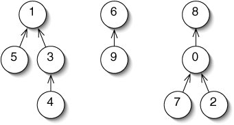

- Mantiene una Colección de Conjuntos.
- Los conjuntos son Disjuntos (ningún elemento pertenece a más de un conjunto).
Esta estructura nos permite realizar operaciones de búsqueda y union de manera eficiente.
También conocidos como Union Find o DSU.
Estructura
- Un elemento de cada conjunto es su representante (elemento raíz) y hay un camino de cualquier otro elemento de un conjunto a su representante.
- 2 elementos son parte del mismo conjunto si tienen el mismo representante.
- 2 conjuntos se pueden unir si se unen sus representantes.

1, 6 y 8 son los representantes para cada conjunto.
El conjunto con representante 4 se une al conjunto con representante 2.
La eficiencia del disjoint set depende de como se unen los conjuntos.
Una estrategia: Conectar al representante del conjunto más pequeño al representante del conjunto más grande. La altura del nuevo conjunto será log(n).
Datos a manejar:
- dsu[]: Almacena el representante de cada elemento.
- size[]: Almacena el size de los elementos representantes de cada conjunto.
- numDisjointSets: Almacena la cantidad de conjuntos disjuntos que existen.
Métodos a manejar:
- find(data): Retorna el elemento representativo del conjunto al que pertenece data.
- union(e1, e2): Une el conjunto al que pertenece e1 con el conjunto al que pertence e2.
- sizeOfSet(data): Retorna la cantidad de elementos del conjunto al que pertenece data.
Time Complexity: O(log(n))